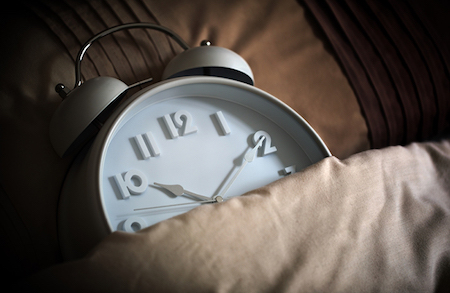

ПРАВИЛО №1
СОБЛЮДЕНИЕ ПИТЬЕВОГО РЕЖИМА
Сколько воды необходимо выпивать в сутки?
ОТВЕТ: от 2 до 2,5 литров
Как правильно пить воду?
ОТВЕТ: небольшими глотками на протяжении всего дня
К чему может призвести недостаток воды?
ОТВЕТ: плохое самочуствие, тошнота, сонливость
Прогноз соблюдения питьевого режима в разных социальных образованиях
|
Социальное образование |
Приблизительное количество людей |
Приблизительный обьём води (в литрах) |
|
Ваша семья |
4 |
6,5 |
|
Жители вашего дома |
126 |
204,75 |
|
Жители Кривого Рога |
634 780 |
1 031 517,5 |
|
Жители Украины |
41 902 400 |
68 091 400 |
|
Все люди планеты Земля |
7 530 000 000 |
12 236 250 000 |
ПРАВИЛО №2
СОБЛЮДЕНИЕ НОРМЫ КАЛОРИЙ
Калькулятор ежедневной нормы калорий
Формула Миффлина-Сан Жеора – это одна из самых последних формул расчета калорий для оптимального похудения или сохранения нормального веса. Она была выведена в 2005 году и все чаще стала заменять классическую формулу Харриса-Бенедикта.
Формула Миффлина-Сан Жеора, разработанная группой американских врачей-диетологов под руководством докторов Миффлина и Сан Жеора, существует в двух вариантах – упрощенном и доработанном и выдает необходимое количество килокалорий (ккал) в сутки для каждого конкретного человека.
1. Упрощенный вариант формулы Миффлина-Сан Жеора:
- для мужчин: 10 х вес (кг) + 6,25 x рост (см) – 5 х возраст (г) + 5;
- для женщин: 10 x вес (кг) + 6,25 x рост (см) – 5 x возраст (г) – 161.
2. Доработанный вариант формулы Миффлина-Сан Жеора, в отличие от упрощенного дает более точную информацию и учитывает степень физической активности человека:
- для мужчин: (10 x вес (кг) + 6.25 x рост (см) – 5 x возраст (г) + 5) x A;
- для женщин: (10 x вес (кг) + 6.25 x рост (см) – 5 x возраст (г) – 161) x A.
A – это уровень активности человека, его различают обычно по пяти степеням физических нагрузок в сутки:
- Минимальная активность: A = 1,2.
- Слабая активность: A = 1,375.
- Средняя активность: A = 1,55.
- Высокая активность: A = 1,725.
- Экстра-активность: A = 1,9 (под эту категорию обычно подпадают люди, занимающиеся, например, тяжелой атлетикой, или другими силовыми видами спорта с ежедневными тренировками, а также те, кто выполняет тяжелую физическую работу).
Калькулятор для мужчин
Калькулятор для Женщин
ПРАВИЛО №3
СОБЛЮДЕНИЕ ЗДОРОВОГО ОБРАЗА ЖИЗНИ
Зачем необходимо делать зарядку ?
Ответ: Утренняя зарядка не только взбодрит тело с утра, но и придаст бодрости организму на целый день, увеличит поступление кислорода в организм и тем самым увеличит работоспособность мозга
К каким последствиям может привести отсутствие
физических упражнений ?
Ответ: Вялость, лишний вес.
Как смотивировать себя делать зарядку ?
Ответ: Вариантов много. Главное чтобы вы этого хотели
КАК Я ВЫПОЛНЯЮ ЗАРЯДКУ
ПРАВИЛО №4
СОБЛЮДЕНИЕ ЗДОРОВОГО РЕЖИМА СНА
1. Здоровый сон
Специалисты организации Nemours, которая занимается здоровьем детей,
считают, что подростки должны спать около девяти часов в сутки.
Тинейджеры редко столько лежат в кровати.
Как сон влияет на подростковое здоровье?

* Помогает подростку полноценно расти и развиваться;
* Напрямую влияет на внимательность и успехи в школе;
* Помогает добиваться успехов в спорте;
Нарушения сна приводят к многочисленным сложностям со здоровьем
лишний вес и проблемы с сердцем, нарушения иммунитета
и эмоциональные проблемы
У подростков сбиваются биологические часы
В подростковом возрасте режим сна заметно отличается от детского или
взрослого. В этот период «сбрасывается» циркадный ритм (или
биологические часы), из-за чего тинейджеры засыпают и просыпаются
позже. Считается, что это связано с мелатонином — гормоном, который
регулирует наши биологические часы.У подростков он вырабатывается
позже, чем у маленьких детей или взрослых, что приводит к тому, что
ребёнок не хочет спать по вечерам.
Мешают стресс и гаджеты
Есть и ещё одна причина нарушения сна — стресс. В подростковом возрасте
у ребёнка больше обязанностей: ЕГЭ, репетиторы, грядущее поступление,
половое созревание. Мозг постоянно возбуждён.
Также достаточно распространённая причина нарушения сна — привычка
ложиться спать с телефоном или планшетом. Большое количество
информации не даёт мозгу успокоиться, поэтому подростку тяжело заснуть
К слову, такой же эффект вызывают поздние раунды в Fortnite или «Доту».
Как помочь подростку высыпаться?
Вот советы, которые помогают выровнять режим сна
* Ложиться спать и просыпаться в одно и то же время, даже в выходные;
* Больше физической активности, но, главное, не перед сном (нужно около
трёх часов, чтобы организм успокоился);
* Пить меньше кофе, чая и энергетиков;
* Перестать пользоваться электроникой хотя бы за час до сна;
* Зажигать в комнате подростка ночник и проветривать по вечерам
Последствия недосыпа
ЕСЛИ подростки не получают положенных 3-10 часов сна каждую ночь, они могут столкнуться со многими неприятными
последствиями, такими как
* Депрессия. Согласно исследованиям, молодые люди, которые ложатся позже, более склонны к развитию депрессии и мыслям
о самоубийстве. В мозгу, похоже, существует связь между сном и депрессией.
* Плохие оценки. У подростков, которые не высыпаются, обычно появляются проблемы с памятью и школьной успеваемостью.
* Поведение. От нехватки сна может снижаться внимание, как результат — гиперактивность и новые скандалы
* Дорожно-транспортные происшествия. У сонного подростка, как правило, замедленная реакция, поэтому он рискует стать
участником ДТП
Сколько нужно спать людям в разном возрасте, чтобы быть здоровыми:
* Новорожденные (до 3 месяцев) -14-17 часов
* Дети (4-11 месяцев) -12-15 часов
* Дети (от1 года до 2 лет) -11-14 часов
* Дошкольники (3-5 лет) -10-13 часов
* Школьники (отб до 13 лет) — 9-11 часов
* Подростки (14-17 лет) — 8-10 часов
* Взрослые (18 лет - 64 года) - 7-9 часов
* Пожилые люди старше 65 лет — 7-8 часов.
| Член семьи | Возраст | Ложиться спать | Встает | Всего спит | Должен спать | Вывод |
| Я | 14 | 00:00 | 8:00-12:00 | 6-10 часов | 8-10 часов | частичный недосып |
| Мама | 39 | 23:00 | 8:00-9:00 | 7-8 часов | 7-9 часов | нормальный режим сна |
| Папа | 40 | 23:00 | 7:00 | 6 часов | 7-9 часов | недосып |
Этический вывод:
1. Каждый человек должен нести индивидуальную ответственность перед семьей
и обществом за свое здоровье, путем соблюдения здорового образа жизни, в
том числе и режима сна
2. Проживая в сообществе других людей, каждый из нас обязан заботиться о
здоровье ближних и стараться поддерживать других в соблюдении режима
3. При наличии в семье людей с различными хронотипами мы должны уважать их
возможности и потребности, и если человек лег слать - необходимо
поддерживать все условия, необходимые для его полноценного сна: тишину,
тепло, темноту вокруг.
Что такое хронотип?
Хронотип - это характер организации суточных (циркадных биоритмов человека.
 Хронотип отражает суточную динамику функциональной активности различных органов
и систем организма (время пробуждения и засыпания, работоспособность, 24-часовой
риты артериального давления и др.)
Хронотип отражает суточную динамику функциональной активности различных органов
и систем организма (время пробуждения и засыпания, работоспособность, 24-часовой
риты артериального давления и др.)
В зависимости от активности человека в то или иное время суток выделяют 3 хронотипа
«экаворонки» - утренний тип;
«голуби» - дневной тип;
«совы» - вечерний тип
Психофизиологические различия утреннего и вечернего типа
| Пареметр | "Жайворонок" | "Сова" |
| Время пробуждения | 4.00 - 6.00 | 8.00 - 10.00 |
| Время засыпания | 20.00 - 22.00 | 24.00 - 2.00 |
| Пик активности | 8.00 - 10.00 | После 16.00 |
| Доминируюшее полушарие головного мозга | левое | правое |
| Творческая активность, воображение | меньше | больше |
| Характер мышления | Абстрактно-логическое, аналитическое | Конкретно-предметное, холистическое |
Название теста
1. Трудно ли вам вставать рано утром?
2. Если у вас есть возможность выбора, в какое время вы бы ложились спать?
3. Какой завтрак вы предпочитаете в течение первого часа после пробуждения?
4. Если вспомнить ваши последние размолвки на работе и дома, когда они преимущественно происходили?
5 .От чего легче отказаться:
6. Как точно вы рассчитываете время в течение 1 минуты?
7. Как легко вы можете изменить привычки, связанные с едой, во время отпуска?
8. Если рано утром предстоят важные дела, насколько раньше вы ложитесь спать?
9 Если вы ложитесь спать в 23.00, то какова степень вашей усталости?
10. Какова степень вашей зависимости от будильника, если утром вы должны встать в определенное время?
11. Как вы деятельны в первые полчаса после утреннего вставания?
12. Вы решили заниматься физкультурой .Ваш друг предложил заниматься дважды в неделю, по 1 часу утром, между 7 и 8 часами утра. Будет ли это благоприятным временем для вас?
13. Вам предстоит какая-либо работа или отъезд ночью, между 4 и 6 часами. На следующий день у вас нет никаких обязанностей .Какую из следующих возможностей вы выберете?
14. Иногда говорят “утренний человек ” и “вечерний человек”. К какому типу вы себя относите ?
15. У вас возникло решение серьезно заниматься закаливанием организма. Друг предложил делать это дважды в неделю, по 1 часу , между 22 и 23 часами вечера. Как вас устраивает это время?
Вы - «жаворонок». Ваши биологические часы идут быстрее, чем астрономические. Соответственно, Вы раньше ложитесь спать и раньше встаете. В ряде случаев при значительном несовпадении биологических и астрономических часов эта проблема может ухудшать качество жизни и рассматривается как расстройство сна, получившее название СИНДРОМ ОПЕРЕЖЕНИЯ ФАЗЫ СНА.
Вы - «сова». Ваши биологические часы идут медленнее, чем астрономические. Соответственно, Вам трудно заснуть вечером и трудно проснуться утром. В ряде случаев при значительном несовпадении биологических и астрономических часов эта проблема может ухудшать качество жизни и рассматривается как расстройство сна, получившее название СИНДРОМ ЗАДЕРЖКИ ФАЗЫ СНА.
Вы - «голубь». Ваши биологические часы идут приблизительно так же, как и астрономические. Это наиболее благоприятный тип суточного ритма, при котором не возникает проблем как с отходом ко сну, так и с подъемом.
ПРАВИЛО №5
СОБЛЮДЕНИЕ РЕЖИМА ТРУДА И ОТДЫХА
«Метод помидора»
Всего 5 простых шагов:
-
Определите и четко сформулируйте задачу.
Очень важно понимать, что и зачем вы собираетесь делать следующие 25 минут -
Заведите таймер на 25 минут.
Почему 25? Согласно исследованиям психологов, человек может концентрироваться на чем-то максимум 50 минут. 25 минут — это один «помидор». Один помидор беспрерывной работы -
Приступайте к работе, пока не зазвонит таймер.
Дайте себе слово, не отвлекаться от задачи все 25 минут, Ни на звонки, ни на сообщения или письма, ни на коллег. Только работа над поставленной задачей -
Сделайте перерыв на 5 минут.
Можно ответить на пропущенные звонки и письма, а лучше встать и размяться. -
После 4 помидоров сделайте большой перерыв.